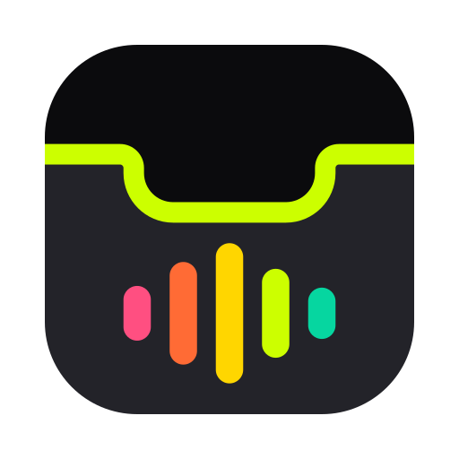
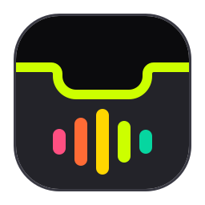
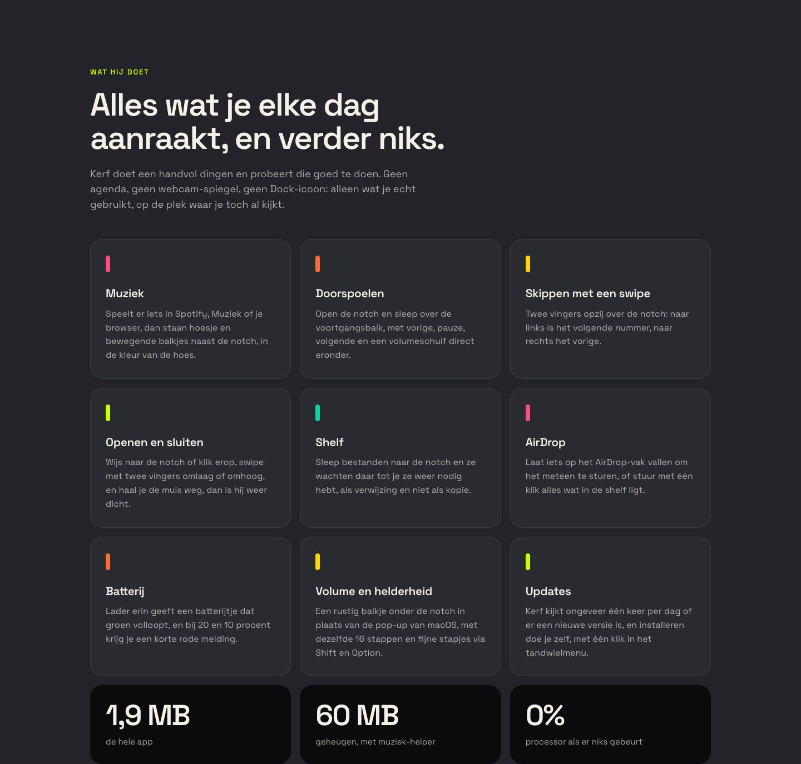
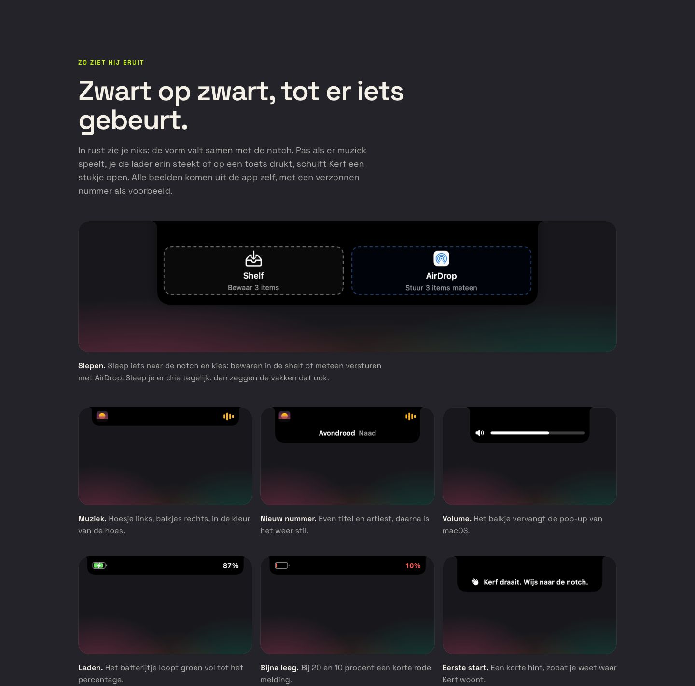
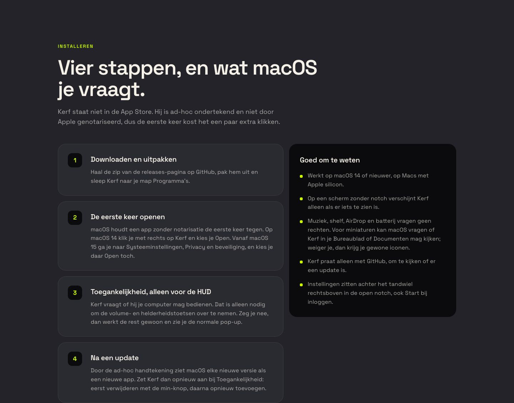
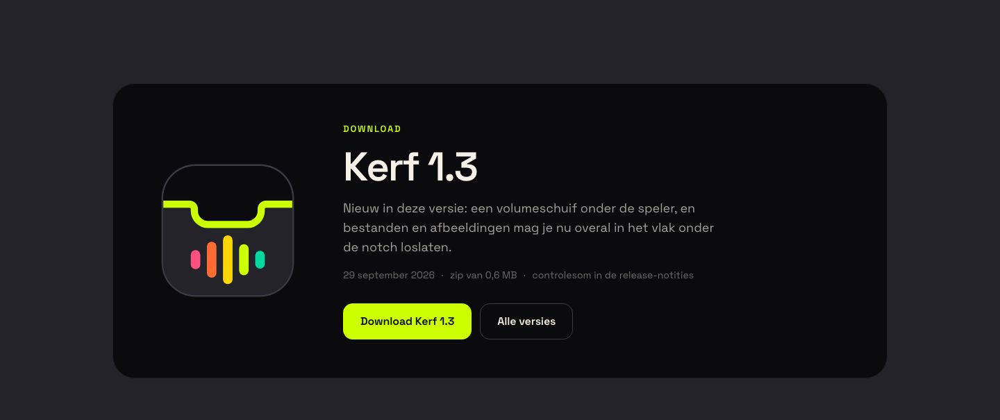
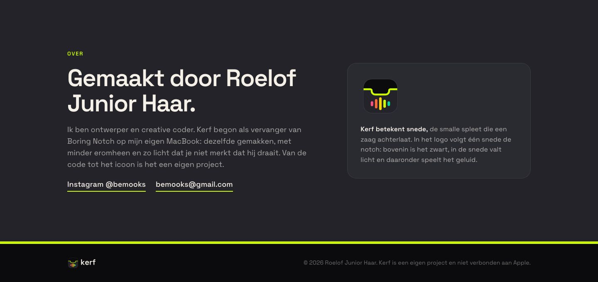

Brand Identity · Kerf
Kerf.
Kerf is het Engelse woord voor de snede die een zaag achterlaat, de smalle spleet in het hout. Het hele merk volgt die ene gedachte: één snede die de notch volgt, met licht erin en geluid eronder.

Naam en logo
Het logo moest op zestien pixels in de menubalk net zo goed werken als groot op de site. Dus is het teken één vorm met één idee, en geen illustratie.


Eén snede
Een zaagsnede volgt de notch dwars door de tegel. Bovenin de zwarte notch, in de snede valt licht en daaronder speelt het geluid in vijf balkjes.
Bewust vlak
De tegel is meteen het app-icoon en is vlak gehouden, omdat macOS zelf een glazen rand en schaduw toevoegt. Voor 16 tot 32 pixels is er een versie met een bredere snede en drie balkjes.
De snede is het licht
Geen schaduwen, verlopen of gloed op het teken. De balkjes wisselen nooit van volgorde, en op donker komt altijd de versie met de dunne lichte rand.
Palet en typografie
Twee donkere tinten voor de notch en het scherm eronder, één lime voor het licht in de snede. De vijf balkjes lopen altijd van warm naar koel, van links naar rechts, zoals geluid dat uitwaaiert.
De site, van boven naar beneden





De toon
Kort, Nederlands en een beetje droog. De app zegt "Kerf draait. Wijs naar de notch." en "Er speelt niks". Geen uitroeptekens en geen verkooppraat, want een app die je de hele dag ziet moet niet de hele dag iets van je willen.